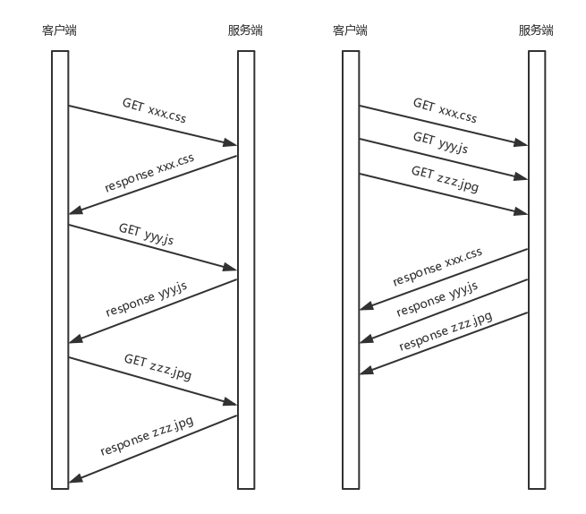

1. HTTP协议#
1.1 HTTP请求的准备#
浏览器会将域名发送给DNS服务器，将其解析为IP地址。而后因为HTTP是基于TCP协议的，所以需要先通过三次握手来建立TCP连接。目前使用的HTTP协议大多数是1.1版本的，在1.1的协议当中，默认开启了Keep-alive，这意味着建立的TCP连接可以在多次请求中复用。
1.2 HTTP请求的构建#
连接建立以后，浏览器就要发送HTTP请求。
请求的格式如下图所示：

HTTP的请求分为三部分，分别为请求行，请求的首部，请求的正文实体。
1.2.1 请求行#
方法 + sp + URL + sp + 版本 + cr + If
在请求行中，URL就是http://www.google.com, 版本是HTTP1.1。
方法有几个类型：
- GET
GET就是去服务器获取一些资源。对于访问网页来讲，要获取的往往是一个页面，也会有很多其他的格式，比如返回一个JSON字符串等等。返回的状态是由服务器的实现来决定的。
- POST
主动告诉服务端一些信息，而非获取。一般是将这些信息放在正文当中。
- PUT
向指定资源位置上传最新的内容，但是HTTP的服务器往往不允许上传文件，所以PUT和POST就都变成了要传给服务器东西的方法。POST往往是用来创建一个资源的，而PUT往往是用来修改一个资源的。
- DELETE
用来删除资源的。
1.2.2 首部字段#
首部字段首先是key value，通过冒号分隔。这里往往保存了一些非常重要的字段，比如：
- Accept-Charset： 这里表示客户端可以接受的字符集，防止传过来的是另外的字符集，从而导致出现乱码。
- Content-Type: 正文的格式。例如如果正文是JSON，那这里我们就应该将其设为JSON。
- 缓存
为什么要使用缓存呢？因为一个大的页面会有很多的东西。图片和大段的介绍内容往往是不会太经常发生变化的，因此我们每次更新页面的时候，不应该刷新整个页面，完全的从服务器重新获取一遍数据，应该做局部的刷新的。
对于这种高并发场景下的系统，在真正的业务逻辑之前，都会有一个接入层，将这些静态资源的请求拦在最外面。架构图如下所示：

基本上是客户端和DNS还有CDN相连，再联系负载均衡模块 - nginx。将资源划分为动态资源和静态资源，对于静态资源，使用Varnish缓存层；对于动态资源，使用Redis，Varnish和Redis都和Tomcat应用集群相连，这意味着如果无法从缓存中拿到数据，那就访问服务器，调取数据。
在HTTP头里面，Cache-control是用来控制缓存的，当客户端发送的请求中包含max-age指令时，如果判定缓存层中资源的缓存时间数值比指定时间的数值小，那么客户端可以接受缓存的资源；当指定max-age值为0，那么缓存层通常需要将请求转发给应用集群。
- If-Modified-Since
如果服务器的资源在某个时间之后更新了，那么客户端就应该下载最新的资源；如果没有更新，服务端会返回”304 Not Modified”的响应，那客户端就不用下载了，也会节省带宽。
到目前为止，我们有了HTTP请求的报文格式，接下来，浏览器会通过Socket将其交给传输层。
1.2.3 HTTP请求的发送#
HTTP协议是基于TCP协议的。使用面向连接的方式发送请求，通过stream二进制流的方式传给对方。到了TCP层，它会把二进制流变成一个报文段发送给服务器。
在发送每一个报文段的时候，都需要对方回应一个ACK，来保证报文可靠地到达对方。如果没有回应，那么TCP这一层会重新传输，直到可以到达。
TCP 层发送每一个报文的时候，都需要加上自己的地址（即源地址）和它想要去的地方（即目标地址），将这两个信息放到 IP 头里面，交给 IP 层进行传输。
IP 层需要查看目标地址和自己是否是在同一个局域网。如果是，就发送 ARP 协议来请求这个目标地址对应的 MAC 地址，然后将源 MAC 和目标 MAC 放入 MAC 头，发送出去即可；如果不在同一个局域网，就需要发送到网关，还要需要发送 ARP 协议，来获取网关的 MAC 地址，然后将源 MAC 和网关 MAC 放入 MAC 头，发送出去。
网关收到包发现 MAC 符合，取出目标 IP 地址，根据路由协议找到下一跳的路由器，获取下一跳路由器的 MAC 地址，将包发给下一跳路由器。这样路由器一跳一跳终于到达目标的局域网。这个时候，最后一跳的路由器能够发现，目标地址就在自己的某一个出口的局域网上。于是，在这个局域网上发送 ARP，获得这个目标地址的 MAC 地址，将包发出去。
目标的机器发现 MAC 地址符合，就将包收起来；发现 IP 地址符合，根据 IP 头中协议项，知道自己上一层是 TCP 协议，于是解析 TCP 的头，里面有序列号，需要看一看这个序列包是不是我要的，如果是就放入缓存中然后返回一个 ACK，如果不是就丢弃。
TCP 头里面还有端口号，HTTP 的服务器正在监听这个端口号。于是，目标机器自然知道是 HTTP 服务器这个进程想要这个包，于是将包发给 HTTP 服务器。HTTP 服务器的进程看到，原来这个请求是要访问一个网页，于是就把这个网页发给客户端。
1.2.4 HTTP返回的构建#
基于HTTP/1.1的返回报文：

状态码会返回HTTP请求的结果。
而后是返回首部的key value。
- Retry-After表示告诉客户端应该在多长时间以后再次尝试一下。
- Content-Type: 表示返回的是HTML，还是JSON。
构造好了返回的HTTP报文，接下来就是把这个报文发送出去。交给Socket去发送，交给TCP层，让TCP层将返回的HTML分成一个个小段，并且保证每个段都可靠到达。这些段加上TCP头后会交给IP层，然后将刚才的发送过程反方向来一遍。两次的逻辑基本相同，一直到达客户端。
客户端发现 MAC 地址符合、IP 地址符合，于是就会交给 TCP 层。根据序列号看是不是自己要的报文段，如果是，则会根据 TCP 头中的端口号，发给相应的进程。这个进程就是浏览器，浏览器作为客户端也在监听某个端口。
当浏览器拿到了 HTTP 的报文。发现返回“200”，一切正常，于是就从正文中将 HTML 拿出来。HTML 是一个标准的网页格式。浏览器只要根据这个格式，展示出一个绚丽多彩的网页。
这是一个正常的HTTP请求和返回的完整过程。
1.3 HTTP 2.0#
HTTP 1.1 在应用层以纯文本的形式进行通信。每次通信都要带完整的 HTTP 的头，而且不考虑 pipeline 模式的话，每次的过程总是像上面描述的那样一去一回。这样在实时性、并发性上都存在问题。
为了解决这些问题，HTTP 2.0 会对 HTTP 的头进行一定的压缩，将原来每次都要携带的大量 key value 在两端建立一个索引表，对相同的头只发送索引表中的索引。
另外，HTTP 2.0 协议将一个 TCP 的连接中，切分成多个流，每个流都有自己的 ID，而且流可以是客户端发往服务端，也可以是服务端发往客户端。它其实只是一个虚拟的通道。流是有优先级的。
HTTP 2.0 还将所有的传输信息分割为更小的消息和帧，并对它们采用二进制格式编码。常见的帧有Header帧，用于传输Header内容，并且会开启一个新的流。再就是Data帧，用来传输正文实体。多个帧属于同一个流。
通过这两种机制，HTTP 2.0 的客户端可以将多个请求分到不同的流中，然后将请求内容拆成帧，进行二进制传输。这些帧可以打散乱序发送， 然后根据每个帧首部的流标识符重新组装，并且可以根据优先级，决定优先处理哪个流的数据。
我们来举一个例子。假设我们的一个页面要发送三个独立的请求，一个获取 css，一个获取 js，一个获取图片 jpg。如果使用 HTTP 1.1 就是串行的，但是如果使用 HTTP 2.0，就可以在一个连接里，客户端和服务端都可以同时发送多个请求或回应，而且不用按照顺序一对一对应。

HTTP2.0实际上是将三个请求变成三个流，将数据分成帧，乱序发送到一个TCP连接当中。

HTTP 2.0 成功解决了 HTTP 1.1 的队首阻塞问题，同时，也不需要通过 HTTP 1.x 的 pipeline 机制用多条 TCP 连接来实现并行请求与响应；减少了 TCP 连接数对服务器性能的影响，同时将页面的多个数据 css、js、 jpg 等通过一个数据链接进行传输，能够加快页面组件的传输速度。
HTTP2.0虽然大大增加了并发性，但是还存在问题，因为HTTP2.0还是基于TCP协议的，TCP协议在处理包时是有严格顺序的。当其中一个数据包遇到问题，TCP连接需要等待这个包完成重传之后才能继续进行。因此Google引入QUIC协议来加速整个过程。
1.4 QUIC协议#
从TCP切换到了UDP！
1.4.1 自定义连接机制#
我们都知道，一条 TCP 连接是由四元组标识的，分别是源 IP、源端口、目的 IP、目的端口。一旦一个元素发生变化时，就需要断开重连，重新连接。在移动互联情况下，当手机信号不稳定或者在 WIFI 和 移动网络切换时，都会导致重连，从而进行再次的三次握手，导致一定的时延。
这在 TCP 是没有办法的，但是基于 UDP，就可以在 QUIC 自己的逻辑里面维护连接的机制，不再以四元组标识，而是以一个 64 位的随机数作为 ID 来标识，而且 UDP 是无连接的，所以当 IP 或者端口变化的时候，只要 ID 不变，就不需要重新建立连接。
1.4.2 自定义重传机制#
TCP使用序号和应答机制来解决顺序问题和丢包问题。任何一个序号的包发过去，都要在一定的时间内得到应答，否则一旦超时，就会重发这个序号的包。那怎么样才算超时呢？通过使用自适应重传算法，通过采样往返时间RTT不断调整。
其实，在 TCP 里面超时的采样存在不准确的问题。例如，发送一个包，序号为 100，发现没有返回，于是再发送一个 100，过一阵返回一个 ACK101。这个时候客户端知道这个包肯定收到了，但是往返时间是多少呢？是 ACK 到达的时间减去后一个 100 发送的时间，还是减去前一个 100 发送的时间呢？事实是，第一种算法把时间算短了，第二种算法把时间算长了。
QUIC 也有个序列号，是递增的。任何一个序列号的包只发送一次，下次就要加一了。例如，发送一个包，序号是 100，发现没有返回；再次发送的时候，序号就是 101 了；如果返回的 ACK 100，就是对第一个包的响应。如果返回 ACK 101 就是对第二个包的响应，RTT 计算相对准确。
但是这里有一个问题，就是怎么知道包 100 和包 101 发送的是同样的内容呢？QUIC 定义了一个 offset 概念。QUIC 既然是面向连接的，也就像 TCP 一样，是一个数据流，发送的数据在这个数据流里面有个偏移量 offset，可以通过 offset 查看数据发送到了哪里，这样只要这个 offset 的包没有来，就要重发；如果来了，按照 offset 拼接，还是能够拼成一个流。

1.4.3 无阻塞的多路复用#
有了自定义的连接和重传机制，我们就可以解决HTTP2.0的多路复用问题。同 HTTP 2.0 一样，同一条 QUIC 连接上可以创建多个 stream，来发送多个 HTTP 请求。但是，QUIC 是基于 UDP 的，一个连接上的多个 stream 之间没有依赖。这样，假如 stream2 丢了一个 UDP 包，后面跟着 stream3 的一个 UDP 包，虽然 stream2 的那个包需要重传，但是 stream3 的包无需等待，就可以发给用户。
1.4.4 自定义流量控制#
TCP的流量控制是通过滑动窗口协议。QUIC的流量控制是通过window_update，来告诉对方它可以接收的字节数。但是QUIC的窗口是适应自己的多路复用机制的，可以在一个连接中的每一个stream控制窗口大小。
在 TCP 协议中，接收端的窗口的起始点是下一个要接收并且 ACK 的包，即便后来的包都到了，放在缓存里面，窗口也不能右移，因为 TCP 的 ACK 机制是基于序列号的累计应答，一旦 ACK 了一个系列号，就说明前面的都到了，所以只要前面的没到，后面的到了也不能 ACK，就会导致后面的到了，也有可能超时重传，浪费带宽。
QUIC 的 ACK 是基于 offset 的，每个 offset 的包来了，进了缓存，就可以应答，应答后就不会重发，中间的空挡会等待到来或者重发即可，而窗口的起始位置为当前收到的最大 offset，从这个 offset 到当前的 stream 所能容纳的最大缓存，是真正的窗口大小。显然，这样更加准确。

2.HTTPS 协议#
HTTPS协议的适用场景：我们可以用HTTP协议来看新闻，但是放到下单支付的应用场景中会存在很多的风险。如果适用HTTP，假设点外卖支付，网络包被截获了，于是在服务器回复你之前，黑客假装是外卖网站，然后给你回复一个假消息让你发送银行卡号和密码。
为了解决在这种应用场景下的安全问题，需要进行加密，分为对称加密和非对称加密两种：
2.1 加密方式#
2.1.1 对称加密#
在对称加密算法中，加密和解密使用的密钥是相同的。也就是说，加密和解密使用的是同一个密钥。因此，对称加密算法要保证安全性的话，密钥要做好保密。只能让使用的人知道，不能对外公开。
在上述场景当中的问题变成了：如何让用户和银行之间进行交流，来传递公钥，对称加密下这种交流非常的困难。
2.1.2 非对称加密#
在非对称加密算法中，加密使用的密钥和解密使用的密钥是不相同的。一把是作为公开的公钥，另一把是作为谁都不能给的私钥。公钥加密的信息，只有私钥才能解密。私钥加密的信息，只有公钥才能解密。
依旧以上述为例，非对称加密的私钥放在银行网站上，不在互联网上传播，这样就可以保证私钥的私密性；银行网站传播对应私钥的公钥。
这样，客户端给外卖网站发送的时候，用外卖网站的公钥加密。而外卖网站给客户端发送消息的时候，使用客户端的公钥。这样就算有黑客企图模拟客户端获取一些信息，或者半路截获回复信息，但是由于它没有私钥，这些信息它还是打不开。
非对称加密的另一个问题是如何将公钥给对方：
- 放在一个公网的地址上，供下载使用
- 在建立连接的时候，传给对方
需要权威部门的认证来证明我的公钥是官方的，需要证书。证书里面包含公钥还有证书的所有者。注意权威部门是分层级的，通过层层授信背书的方式，来保证非对称加密模式的正常运转。
2.2 HTTPS的工作模式#
利用非对称加密来传输对称加密的密钥，而真正的双方大数据量的通信都是通过对称加密来进行的。

当你登录一个外卖网站的时候，由于是 HTTPS，客户端会发送 Client Hello 消息到服务器，以明文传输 TLS 版本信息、加密套件候选列表、压缩算法候选列表等信息。另外，还会有一个随机数，在协商对称密钥的时候使用。
然后，外卖网站返回 Server Hello 消息, 告诉客户端，服务器选择使用的协议版本、加密套件、压缩算法等，还有一个随机数，用于后续的密钥协商。
然后，外卖网站会给你一个服务器端的证书，然后说：“Server Hello Done，我这里就这些信息了。”
你当然不相信这个证书，于是你从自己信任的 CA 仓库中，拿 CA 的证书里面的公钥去解密外卖网站的证书。如果能够成功，则说明外卖网站是可信的。这个过程中，你可能会不断往上追溯 CA、CA 的 CA、CA 的 CA 的 CA，反正直到一个授信的 CA，就可以了。
证书验证完毕之后，觉得这个外卖网站可信，于是客户端计算产生随机数字 Pre-master，发送 Client Key Exchange，用证书中的公钥加密，再发送给服务器，服务器可以通过私钥解密出来。
此时无论是客户端还是服务器都有三个随机数：自己的，对端的，以及刚生成的Pre-Master随机数。通过这三个随机数，可以在客户端和服务器产生相同的对称密钥。
客户端Change Cipher Spec, 开始采用协商的通信密钥和加密算法进行加密通信了。然后发送一个 Encrypted Handshake Message，将已经商定好的参数等，采用协商密钥进行加密，发送给服务器用于数据与握手验证。